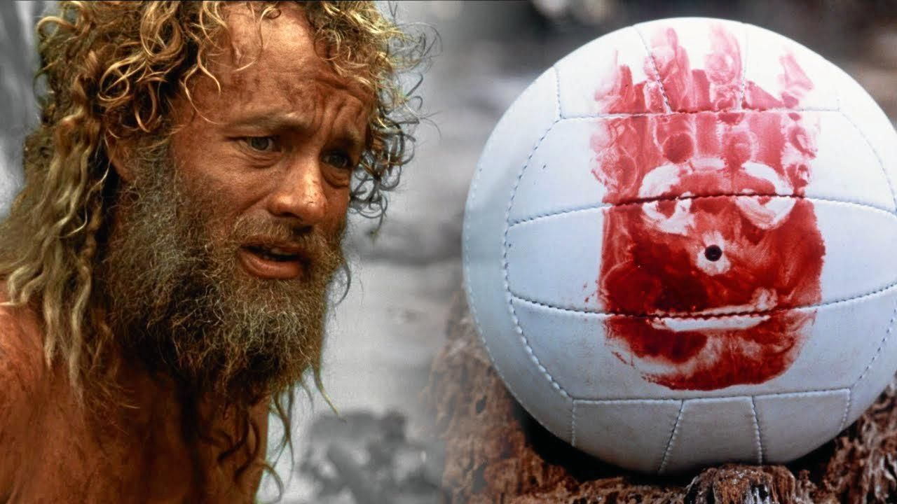

Cast Away è uno di quei film diventato un cult ed entrato, ormai, nell’immaginario collettivo. La storia di Chuck Noland, uomo di mezza età e dalla vita sedentaria, schiavo del lavoro, che rimane solo per cinque lunghi anni su un’isola deserta, ha straziato il cuore di milioni di persone in tutto il mondo.
Questo film ha totalmente ridefinito la figura del naufrago, tradizionalmente identificata con Robinson Crusoe, analizzando la psicologia dell’uomo, il rapporto con la sua solitudine e la sua rinascita fisica e mentale.
In Cast Away, film di Robert Zemeckis del 2000, Tom Hanks (alla seconda collaborazione con il regista dopo Forrest Gump) ne è il protagonista indiscusso. Tuttavia, non è il solo a dominare le scene: per la maggior parte del tempo, Hanks si trova a dover dividere il set con Wilson, un co-protagonista d’eccezione.
Hanks ha interpretato Chuck Noland, un ingegnere di Memphis, dirigente della FedEx, che si reca in Malesia per un’urgenza lavorativa. Ma l’aereo precipita e Chuck approda, da solo, su un’isola deserta. Tra i vari oggetti andati perduti, Noland trova un pallone da pallavolo che decide di chiamare Wilson (lo stesso nome della marca) e ne disegna un volto con l’impronta della sua mano insanguinata.
Wilson non diventa altro che il suo compagno di vita, un amico e un confidente: pur essendo un oggetto inanimato, Noland riesce a immaginarlo intriso dell’essenza della vita, un po’ come tendenzialmente fanno i bambini con i propri giocattoli. Quello di Chuck, cioè di rendere Wilson il suo confidente, è un tentativo per evitare di cadere nel vortice della pazzia dettata dalla solitudine estrema.
Il legame tra il protagonista e il pallone va ben oltre la materialità, instaurando un legame univoco affettivo, tanto che Chuck rischierà persino di affogare per salvare il suo amico, dopo che questi cade dalla zattera nel mare aperto a causa di una tempesta. Eppure perché disperarsi tanto per un semplice pallone? Wilson ha davvero salvato la vita di Chuck perché è stato trattato come un umano da Chuck stesso: lo ha salvato dalla solitudine, in un certo senso lo ha aiutato nel fargli capire quali sono le cose che realmente contano nella vita.